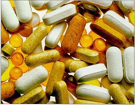

La Industria de los Suplementos Alimenticios
|
Ante esta situación la ASOCIACION NACIONAL DE LA INDUSTRIA DE PRODUCTOS NATURALES (ANIPRON, A.C.), organismo que agrupa y representa a la rama industrial de fabricantes y distribuidores de suplementos alimenticios y remedios herbolarios, ha exhortado a sus afiliados a cumplir las disposiciones legales en materia de publicidad, a lo cual hemos tenido siempre una respuesta muy favorable. Los denominados por sus propiedades productos milagro, no forman parte de esta industria que se compone de fabricantes nacionales, distribuidores de productos importados, distribuidores mayoristas, comerciantes al detalle, tiendas naturistas, distribuidores de venta directa, proveedores de materia prima, equipo de manufactura, etc. En otros países los modelos de legislación para los suplementos alimenticios son diferentes, sin embargo en lo referente a México, Anipron, ha participado activa y permanentemente con autoridades de COFEPRIS (SSA), PROFECO y otras autoridades con objetivo de vigilar que los fabricantes y comercializadores cumplan la legislación vigente. Como ejemplo se menciona que dentro de la Ley General de Salud donde los suplementos alimenticios se encuentran perfectamente definidos en el Art. 215 fracción V como: Productos a base de hierbas, extractos vegetales, alimentos tradicionales, deshidratados o concentrados de frutas, adicionados o no de vitaminas o minerales, que se pueden presentar en forma farmacéutica y cuya finalidad de uso sea incrementar la ingesta dietética total, complementarla o suplir alguno de sus componentes. Adicionalmente se establecen los lineamientos en cuanto a etiquetado, publicidad y límites de vitaminas en el Reglamento de Productos y Servicios de la Secretaría de Salud. Sumado a esto, y a petición de la SSA, La Cámara de Diputados aprobó recientemente, una modificación a la ley en la que incrementa las multas a quienes emitan publicidad que confunda, engañe y atribuya propiedades no comprobadas en los suplementos alimenticios, modificación que fue suficientemente difundida por todos los medios posibles. Nuestra asociación manifiesta su rechazo a toda aquella publicidad y artículos publicados en diversos medios en los que, por falta de información, se confunde al consumidor mostrandos datos e información en los que no se indica su procedencia o simplemente se mezcla la información relativa a los productos naturistas, legalmente permitidos, con los llamados milagro cuya publicidad exagera y engaña al consumidor. Habría que reconocer también que las industrias de suplementos alimenticios y herbolaria han aportado a nuestro país un enorme servicio, promoviendo el cambio de hábitos hacia una alimentación sana, equilibrada, logrando mejorar la calidad de vida de la población, promoviendo la cultura de la prevención y del ejercicio, buscando siempre el bienestar de la población. La industria de productos naturales en México está viviendo una gran transformación, está compitiendo en calidad y profesionalismo con empresas internacionales y el mayor beneficiado de este efecto de la globalización será siempre el público consumidor. La industria naturista nacional, representada por cientos de empresas y cientos de miles de familias que se benefician económicamente de ella, asume a través de ANIPRON su responsabilidad y compromiso en la vida económica del país, promoviendo siempre la legalidad y el cumplimiento de las leyes, buscando finalmente el beneficio de la población en general. |